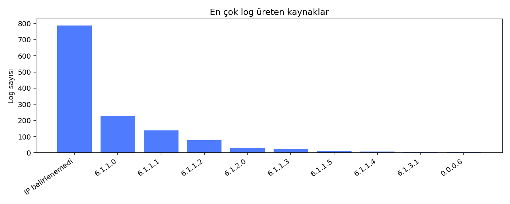
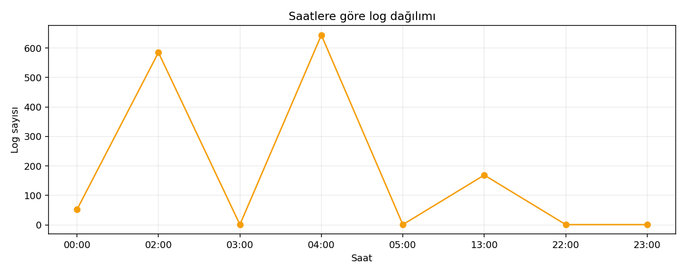

R1 · Brute Force tespiti
2026-10-14T13:39:15
Olası brute-force giriş denemesi
Neden eşleşti? Aynı IP'den 10 dakika içinde 5 başarısız giriş kaydı bulundu; eşik 5.
Ham log kanıtını göster
failed password for user ahmet
Kapsam: Tüm veritabanı · Rapor zamanı: 2026-10-14 13:52:55 Türkiye Standart Saati · Otomatik kural eşleşmeleri inceleme gerektirir.
Her bulguda önce neden eşleştiği, ardından ham log kanıtı gösterilir. IP adresi bulunamayan kayıtlar “IP belirlenemedi” olarak işaretlenir; 0.0.0.0 gerçek kaynak IP değildir.
Neden eşleşti? Aynı IP'den 10 dakika içinde 5 başarısız giriş kaydı bulundu; eşik 5.
failed password for user ahmet
Neden eşleşti? Kayıt saati 03:20:00; kuralın mesai dışı aralığı 22:00–06:00. Mesajda kullanıcı ev dizini yolu dışında admin/root hesabı anahtar sözcüğü bulundu. Bu bir kural eşleşmesidir; tek başına doğrulanmış yetkisiz erişim kanıtı değildir.
failed password for admin from untrusted terminal
Neden eşleşti? Kayıt saati 05:55:30; kuralın mesai dışı aralığı 22:00–06:00. Mesajda kullanıcı ev dizini yolu dışında admin/root hesabı anahtar sözcüğü bulundu. Bu bir kural eşleşmesidir; tek başına doğrulanmış yetkisiz erişim kanıtı değildir.
Configuration file modified by root user
Neden eşleşti? Kayıt saati 22:15:00; kuralın mesai dışı aralığı 22:00–06:00. Mesajda kullanıcı ev dizini yolu dışında admin/root hesabı anahtar sözcüğü bulundu. Bu bir kural eşleşmesidir; tek başına doğrulanmış yetkisiz erişim kanıtı değildir.
User admin initiated system backup routine
Neden eşleşti? Kayıt saati 23:45:12; kuralın mesai dışı aralığı 22:00–06:00. Mesajda kullanıcı ev dizini yolu dışında admin/root hesabı anahtar sözcüğü bulundu. Bu bir kural eşleşmesidir; tek başına doğrulanmış yetkisiz erişim kanıtı değildir.
Remote ssh login established by root account
Anomali eşiğini aşan saat dilimi bulunmadı.

